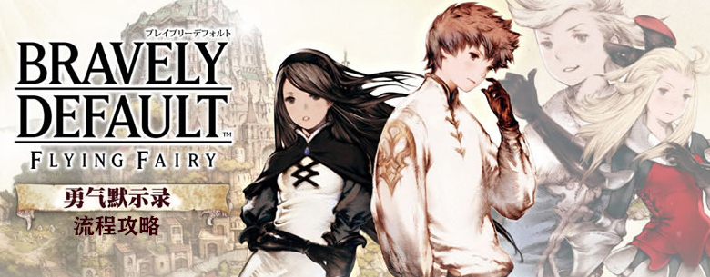
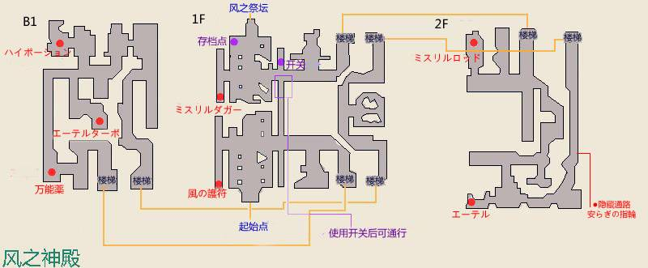

第一章 只是等待的话连狗都做得到
-前往砂と大時計の国ラクリーカ
以风赖以生存的ラクリーカ，正因风之水晶被污染造成的无风天气所困扰。为了改善这个情况，ラクリーカ王进行了劳动改革，压迫民众通过大量的苦力工作弥补无风的动力不足。
整个国家都洋溢着对巫女的不满及对技术的自傲。提兹等人最后还是决定前去参见国王。
国王表示人民已经无法再承受巨大劳力的压迫，并轻蔑地说“让已经停止的风再次吹拂，这不正是风之巫女的责任么，这个时代，巫女难道还有其他价值么？”地位尴尬的阿尼艾斯等人决定前往风之神殿。
*支线剧情教学
-由大地图前往风之神殿
风之神殿

Tips：风之神殿小怪等级略高，建议先在支线剧情迷宫处升级。风之神殿怪物弱风、火、水。
提兹在风之神殿见到的只有满溢的寂静的悲伤。经过一场场战斗，四人终于进入了风之神殿深处。
Tips：存档点右侧凹处有个机关，打开后可开启入口捷径。
为了使水晶重现光芒，阿尼艾斯需要穿着祈祷衣进行仪式。于是四人重新返回宝物库寻找祈祷衣。
-返回寻找祈祷衣
阿尼艾斯只找到了残破的祈祷衣，众人担心这样的祈祷衣已经失去了效力，无法再支持仪式的进行了（途中某花痴男掉节操了）。沮丧之余，阿尼艾斯忽然想到ユルヤナの森的老师那里可能会有制作祈祷衣的方法，看到了新的希望，四人出发前往ユルヤナの森。
-使用飞艇前往ユルヤナの森
ユルヤナの森由BGM开始就给人一种温馨的感觉，这时，有位长相和蔼的工口爷爷出来迎接众人。阿尼艾斯向老师转达了母亲的亡故的消息。
老师：你母亲当年也是了不起的美人啊，怎么说呢，就是胸涌澎湃的那种感觉吧。
林格（双眼放光）：啊！这个话题，过会儿我们能深入探讨一下吗？还有，我还想和您聊聊这里有没有美人的事……
伊蒂亚：闭嘴笨蛋→ →！
四人正在商量净化四处水晶的问题，林格阿贝尔不负搞笑役担当之名，果断跑题五公里，和老师意气相投地聊起了女性衣物的问题。不过话题也因此转到了祈祷衣上，老师表示制作祈祷衣需求特殊素材祈りの虹糸，众人决定休息一日之后再行寻找。
-由大地图前往祈祷衣の洞穴
祈祷衣の洞穴

几经周折，终于在洞穴深处找到了祈りの虹糸，此刻身后却传来魔物的吼声……
★BOSS战 ドラゴン（HP6000，弱水）
Tips：攻击强度一般。偶尔会有单体高攻，请注意备好复活药。如果装备秘银系列（ミスリル）装备那么可以只留一个回复角色，其余人物全力进攻。
水晶妹子对老师没有告知有这种大型魔物的事表示非常愤怒，阿尼艾斯却认为这也算是巫女试炼的一部分。成功制作出了祈祷衣，答谢过老师之后，四人再次前往风之神殿。
-使用飞艇前往风之神殿
进入风之神殿深处，众人发现了水晶正教传说中的灾厄代表双头犬（オルトロス）。只有将其打败，才能解放水晶的力量。
★BOSS战 オルトロス（蓝、红各一，HP4000，分别弱火/水）
Tips：攻击力较高，建议先根据魔法弱点急火一个脑袋。前期使用双治疗保守攻击，解决一个脑袋之后便可放手输出。
消灭了魔物，阿尼艾斯开始进行水晶解放仪式。
-反复按×键完成仪式（这算哪门子仪式啊【摔！】）
仪式成功。四人决定继续解放其余的三枚水晶。
*支援技能栏+1
-返回城镇
返回城镇的提兹等人正好看到了ラクリーカ王的演说。
ラクリーカ王：大家知道么，之前出逃的风之巫女，前些日子又重新回到了这个国家。由于现在形势紧迫，不是责难她的时机，并且巫女自己也承诺取回停止了的风，因此我才纵容了她。
ラクリーカ王：但是，大家现在看，南边那妖冶的祸患之光！巫女她不但没有让风再次吹拂大地，反而引来了更大的灾祸！现在依然一丝风都没有，便是最好的证据！我们不能再忍受这种耻辱了，不能再放任巫女为我国蒙羞了！水晶正教，以及巫女，全都已经是过去的幻想了！水晶所支配的一切都已经不在了！呐，各位！不要再对巫女抱有任何指望了，让我们用自己的力量与国难做斗争！
ラクリーカ王：为了国家，本王决定奖赏勤劳工作的！每天工作20小时以上的人，本王都会授予勋章！当我们战胜这个考验的时刻，就是ラクリーカ国开创新历史的开端！
阿尼艾斯打断了王的演说，向民众说明了风之水晶已经解放一事。民众却质疑依然无风这一事实。被逼至绝路了阿尼艾斯忽然爆发出了全新的勇气，她拿出了双头犬掉落的凶风之锁，民心终于再次倒向了巫女，正在此时，风终于重新吹了起来，ラクリーカ国终于从病态的劳力压迫中解放了出来。
阿尼艾斯：我的声音……传达到了吗……
提兹：没错！大家都明白你的心意了噢！阿尼艾斯所指示的希望之路，大家都看到了呢！
伊蒂亚：阿尼艾斯，太好了！巫女好厉害！我们果然是正义呢～！
林格：果然我的眼光没错呢。
提兹：呐，快去回应大家的欢呼吧。
被幸福的民众包围的阿尼艾斯，终于再次找回了身为巫女的意义。但她的旅程还没有结束，为了解放另外三枚水晶，完成巫女使命，旅途，还要继续。
-由左出口出城，触发剧情
搭乘着飞艇寻找其他巫女的四人，却被忽然出现的暗黑骑士アナゼル·ディー破坏了原本悠闲的气氛。伊蒂亚再次坚持于自己的正义，拒绝回到阿塔尔尼亚公国。暗黑骑士劝说不成，破坏了飞艇的飞行石后离开了。
由于飞艇无法再飞行，提兹等人只能走陆路，取道瘴气之森。